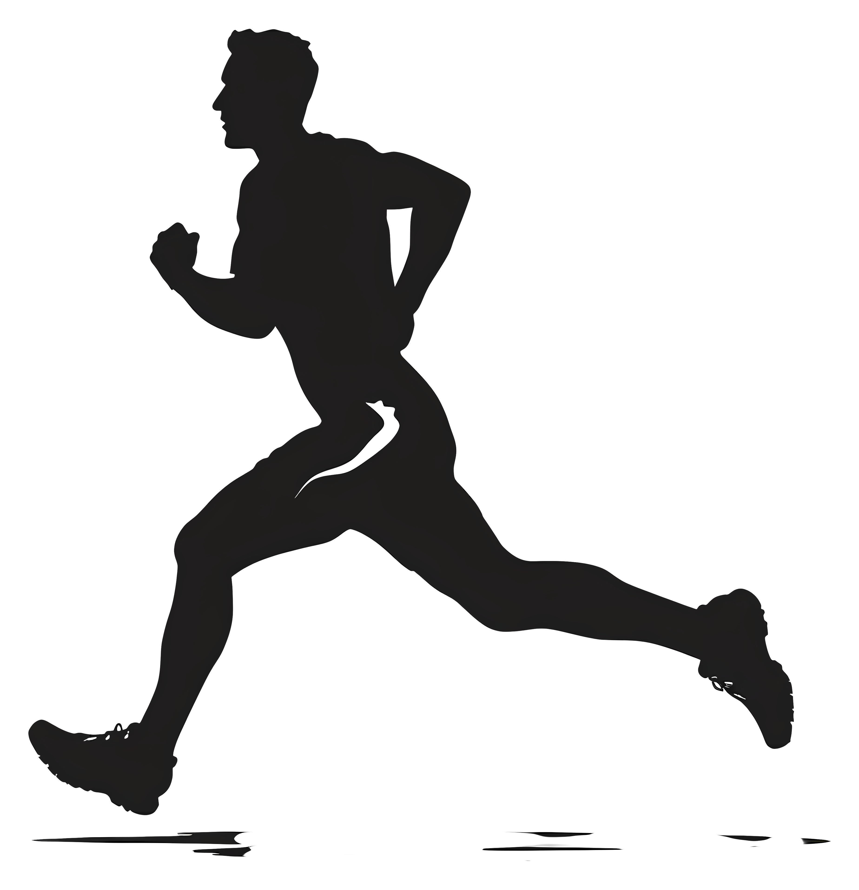

.jpg)
.jpg)
.jpg)
.png) Construcciones
Construcciones.jpg)
.jpg)
.jpg)
.jpg)
.jpg)
.jpg)
.jpg)
.png) Patrimonio Industrial de Trubia
Patrimonio Industrial de Trubia
.jpg)
 Cómo llegar
Cómo llegar
Bus Urbano y Tren de Cercanías
Para poder llegar a Trubia y a San Andrés has de subirte a la LÍNEA L1/ L2 TUDELA VEGUÍN – SAN ANDRÉS del Bus Urbano de Oviedo. También es posible a través del tren de cercanías desde Oviedo y desde Gijón.
Explora las Otras Zonas Verdes de Oviedo

Zonas Verdes
Descubre tu refugio natural en Oviedo, explora los diversos oasis y remansos de paz que la ciudad tiene para ofrecer.
Campillín
DescubrirLa Rodriga
ExplorarSantullano
VisitarSan Pedro
RecorrerFinlandesa
AventurarseLas Caldas
SumergirseAl igual que en los parques, en estas zonas verdes podrás encontrar Naturaleza | Deporte | Bienestar.
Parques y Jardines
 de Cataluña
de Cataluña
Superficie: 5.216 metros cuadrados. Riego automático, Juegos infantiles (0 a 6 años), Mesas de futbolín, Pista polideportiva, Paseos con bancos. Especies predominantes: Arces, Cerezos de flor, Cercis, Sequoias, Plátanos de paseo, Magnolios, Thujas.
 del Ferrocarril
del Ferrocarril
Espacio verde situado en la calle Aranjuez de Trubia, se le ha cambiado el nombre a parque del Ferrocarril, por petición de los vecinos.En recuerdo a un servicio que fue esencial para la industria y la vida de la villa.
 de José Suárez
de José Suárez
Los vecinos decidieron en asamblea mantener el nombre de José Suárez para el parque Soto de Abajo, a pesar de la controversia sobre su pasado franquista. Los jardines anexos al centro de salud se convertirán en los Jardines de la Música.
de Cataluña
.jpg)
 de Cataluña
de Cataluña
Superficie: 5.216 metros cuadrados. Riego automático, Juegos infantiles (0 a 6 años), Mesas de futbolín, Pista polideportiva, Paseos con bancos. Especies predominantes: Arces, Cerezos de flor, Cercis, Sequoias, Plátanos de paseo, Magnolios, Thujas.
del Ferrocarril
.jpg)
 de Ferrocarril
de Ferrocarril
Espacio verde situado en la calle Aranjuez de Trubia, se le ha cambiado el nombre a parque del Ferrocarril, por petición de los vecinos.En recuerdo a un servicio que fue esencial para la industria y la vida de la villa.
de José Suarez
.jpg)
 de José Suarez
de José Suarez
Los vecinos decidieron en asamblea mantener el nombre de José Suárez para el parque Soto de Abajo, a pesar de la controversia sobre su pasado franquista. Los jardines anexos al centro de salud se convertirán en los Jardines de la Música.
.png) Narturaleza
Narturaleza
En los siglos XIX y XX
Para adentrarse en la fascinante historia minera de Oviedo, basta con recorrer la Ruta Finlandesa, un camino que todavía guarda vestigios de su pasado como "Camino de Hierro", donde se pueden encontrar restos del antiguo ferrocarril minero.

En El Naranco se extrajo carbón desde mediados del siglo XIX hasta principios del XX. En esta zona se distinguen dos principales cuencas carboníferas: el Grupo Naranco, en la parte norte y el Grupo Cuyences, más al sur.
.png) Otoño y su Colorido
Otoño y su Colorido
.jpg)
.jpg)
.jpg)
.jpg)
.jpg)
.jpg)
.jpg)
.jpg)
.jpg)
La Magia del Otoño en Pista Filandesa
Adéntrate en la tranquilidad de la Pista Filandesa en Oviedo, un camino rodeado de naturaleza que en otoño se llena de tonos dorados y cobrizos. Este sendero, perfecto para pasear o correr, ofrece vistas serenas y un ambiente único para desconectar. Un lugar imprescindible para disfrutar del otoño en plena armonía con el entorno.


Paseo de Valdeflora
 Pista Finlandesa
Pista Finlandesa
Este recorrido de aproximádamente 5,4 Kilometros (ida y vuelta)
ofrece un entorno natural privilegiado, rodeado de flora y fauna autóctonas.
En él podrás encontrar | Naturaleza | Deporte | Historia.

Renacer Natural
Ecos de Vida en la Pista Finlandesa
Un Espectáculo Natural
 El Despertar de la Flora en la Pista Finlandesa
El Despertar de la Flora en la Pista Finlandesa
Se encuentra rodeada de árboles, así como de diversas especies animales autóctonas.
Entre los árboles más destacados veremos: fresnos, chopos, robles, hayas, abedules, espinos,
castaños y laureles.
Es frecuente la presencia de tojos y zarzas a ambos lados del camino.
Pista Finlandesa
Camina
.png) Respira
Respira
Esta zona verde de Oviedo que discurre por la falda del Naranco es una de las más conocidas y transitadas por su cercanía y facil acceso. Permite tanto pasear como realizar ejercicios físicos a lo largo de su recorrido. Además proporciona unas vistas impresionantes de la cuidad.
Es un lugar estupendo para pasar el día en plena naturaleza pues dispone de zonas de merenderos y al oscurecer se ilumina con puntos de luz alimentados por paneles solares.
En su recorrido te puedes sorprender tanto por su variedad de árboles como por los animales, ya que puedes encontrar desde vacas y caballos a pequeños roedores.

Pista Finlandesa
Para respirar aire puro

Pista Finlandesa
Plantación de árboles

Pista Finlandesa
Ideal para el deporte

Pista Finlandesa
Vistas al hospital

Pista Finlandesa
Árboles frutales

 Cubo inteligente
Cubo inteligente
Pista Finlandesa
El consistorio local ha instalado varias papeleras inteligentes que compactan la basura y una de ellas se encuentra en la Pista Filandesa. La nueva papelera tiene capacidad de 125 litros de residuos compactados (550l no compactados), son alimentadas por energía solar y disponen de localización por GPS y un sistema de software que comunica en tiempo real el nivel de llenado. Los operarios de la limpieza ya saben cuando es el momento de su limpieza y vaciado.

Explora y Disfruta
 Actividades Pista Finlandesa
Actividades Pista Finlandesa
Este parque es muy
popular para diversas actividades deportivas y
recreativas.
Running y Jogging.
Ciclismo (Montaña y Recreativo).
Senderismo y Caminatas.
Ejercicio al Aire Libre (Entrenamiento, Yoga y Meditación).
Actividades Familiares (Paseos en Familia y Juegos).
Eventos Deportivos (Carreras y Maratones).
La pista más grande de la ciudad de Oviedo
 Pista Finlandesa
La pista Finlandesa es un espacio por el que se puede pasear y
que, al mismo tiempo, nos ofrece a lo largo del recorrido puntos habilitados para realizar diversos
ejercicios físicos.
En él podrás encontrar | Senderismo | Gimnasio |
Un lugar ideal para caminar y hacer ejercicio al aire libre.


Una pista ideal para practicar deporte
 Deporte en la Pista Finlandesa
Deporte en la Pista Finlandesa
La Pista Finlandesa de Oviedo tiene un recorrido llano y muy cómodo de realizar. A lo largo de su recorrido uno se siente en plena naturaleza, y lo mismo se puede encontrar con caballos, que con las famosas vacas asturianas. Numerosas opciones pensadas para disfrutar Oviedo de una manera que quizá no se os había ocurrido: Oviedo al aire libre.
DEPORTES

Senderismo
Por lo general, se
considera una
ruta moderada, que se tarda una media de 1h. y 14min en recorrer.
Esta ruta
es popular para correr y pasear; sin embargo, podrás disfrutar de algo de paz
durante los
momentos más tranquilos del día.

Ciclismo
La ruta principal de la
Pista
Finlandesa es un recorrido lineal de 2,7 km (5,4 km ida y vuelta) que comienza en la
Calle
Pedro Caravia y termina en Fitoria. Es un trayecto llano y fácil, ideal para
ciclistas de
todos los niveles.

Ejercicio
Este gimnasio es un espacio
diseñado para que los usuarios puedan realizar ejercicios físicos en un entorno
natural.
Este gimnasio cuenta con varios aparatos y estaciones de ejercicio que permiten
trabajar
diferentes grupos musculares.
VÍDEO PISTA FINLANDESA
VISITA VIRTUAL
La Pista Filandesa de Oviedo es un recorrido natural que ofrece a sus visitantes la oportunidad de desconectar y sumergirse en un entorno de gran belleza. Este sendero serpenteante, rodeado de vegetación y vistas panorámicas, es ideal para quienes disfrutan del deporte al aire libre, el senderismo y la tranquilidad de la naturaleza.
En nuestro video, te invitamos a recorrer la Pista Filandesa y descubrir cada uno de sus encantos. A lo largo del trayecto, podrás ver cómo este camino se ha convertido en un espacio imprescindible para los amantes de la actividad física y el bienestar en Oviedo. Sumérgete en su atmósfera tranquila y déjate inspirar por el entorno que hace de la Pista Filandesa un lugar único en la ciudad, perfecto para disfrutar de la paz que brinda el contacto directo con la naturaleza.
 ¿Te gusta caminar?
¿Te gusta caminar?
Caminar al aire libre no solo mejora tu salud cardiovascular y fortalece tus músculos, sino que también reduce el estrés, aumenta la creatividad, y mejora tu estado de ánimo al conectarte con la naturaleza.
Explora y Disfruta
 Otras actividades a realizar en la Pista Finlandesa.
Otras actividades a realizar en la Pista Finlandesa.
Esta pista ofrece
otras actividades con las que se puede disfrutar de la
naturaleza:
Observación de fauna y flora.
Yoga y meditación.
Fotografía.